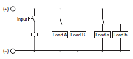

Building Automation
Industrial Automation
Power Automation & Safety


Bangladesh Distributor
 Cautions
Cautions
-
Relays
- General Purpose Relays
-
Solid-state Relays
-
Power Controllers
General Purpose Relays
|
|
|
|
| Safety Precautions |
Safety Precautions for All Relays
Refer to the Safety Precautions for individual Relays for precautions specific to each Relay.
Precautions for Safe Use
Observe the following precautions to ensure safety.
Do not touch the terminal section (charged section) of the Relay or Socket while power is being supplied. Electric shock may occur.
Never use a Relay for a load that exceeds the contact ratings of the Relay, such as the switching capacity. Doing so may result in reducing Relay performance for insulation failure, contact welding, and contact faults, and might even result in burning or other damage to the Relay itself.
Do not drop the Relay or dismantle it. Doing so may reduce Relay performance and might even result in burning or other damage to the Relay itself.
Relay durability is greatly affected by the switching conditions.
Always test the Relay under actual application conditions to confirm applicability and use the Relay only for the number of switching operations that will not affect performance. Continued application of a Relay with reduced performance may result in insulation failure between circuits or in burning in the Relay itself.
Do not apply an overvoltage or incorrect voltage to the coil, and do not wire the terminals incorrectly. Incorrect application may prevent the Relay from performing its designed function, may affect external circuits, and may even result in burning or other damage to the Relay itself.
Do not use the Relay in atmospheres containing inflammable or explosive gases. Switching arcs or Relay heating may result in fire or explosion.
Wire the Relay correctly according to the Precautions for Correct Use when performing wiring or soldering. If the Relay is used with wiring or soldering that is defective, abnormal heating while power is supplied may result in burning.
Relay Application
Before actually using the Relay, perform all possible tests to confirm applicability. Unexpected trouble can occur in actual operation that would not be anticipated in theoretical planning.
Unless otherwise specified, all ratings and performances given in the catalog are for NECA C5442 (JIS C5442) standard test conditions (temperature: 15 to 35°C, humidity: 25% to 75%, pressure: 86 to 106 kPa, altitude: 2,000 m max.). When testing the Relay in the actual application, use the operating environment that will exist in actual applications along with the actual load conditions.
All reference data provided in the catalog are from measurement samples taken from production lines and represented in graph form. Actual values will depend on the application.
All ratings and performances given in the catalog are from independent tests. Values will vary for different combinations of ratings and performances.
Precautions for Correct Use
1. Selecting Relays
1-1 Mounting Structure and Type of Protection
1-1-1 Type of Protection
If a Relay is selected that does not have the appropriate type of protection for the atmosphere and the mounting conditions, it may cause problems, such as contact failure.
Refer to the type of protection classifications shown in the following table and select a Relay suitable to the atmosphere in which it is to be used.
Classification by Type of Protection
| Mounting structure | Type of protection | Features | Representative model | Atmosphere conditions | ||
| Dust and dirt | Corrosive gases | |||||
| PCB- mounted Relays | Flux protection | Structure that helps prevent flux from entering Relays during soldering | G2R | Some protection (No large dust or dirt particles inside Relay.) | No protection | |
| Plastic sealed | Structure that helps prevent the penetration of flux during soldering and solvent during cleaning | G6A | G6S | OK | OK Refer to 3-3 | |
| Plug-in Relays | Unsealed (cased) | Structure that protects against contact with foreign material by means of enclosure in a case (designed for manual soldering) | MY | Some protection (No large dust or dirt particles inside Relay.) | No protection | |
| Plastic sealed | Structure sealed with resin case or cover that provides resistance against atmospheres containing corrosive gases affecting the Relay | G2A-434 | OK | OK Refer to 3-3 | ||
| Hermetically sealed | Structure with metal or glass enclosure and base hermetically sealed with inert gas (N2) that provides resistance against harmful corrosion to prevent orrosive gases from penetrating the Relay | MYH | OK | OK | ||
| Screw (metal)- mounting Relays | Open | Structure that provides protection against contact and penetration of foreign matter | MM2 | No protection | No protection | |
| Enclosed (cased) | Structure that protects against contact with foreign material by means of enclosure in a case (designed for manual soldering) | G7J | Some protection (No large dust or dirt particles inside Relay.) | No protection | ||
1-1-2 Combining Relays and Sockets
Use OMRON Relays in combination with specified OMRON Sockets.
If the Relays are used with sockets from other manufacturers, it may cause problems, such as abnormal heating at the mating point due to differences in power capacity and mating properties.
1-1-3 Using Relays in Atmospheres Subject to Dust
If a Relay is used in an atmosphere subject to dust, dust will enter the Relay, become lodged between contacts, and cause the circuit to fail to close. Moreover, if conductive material such as wire clippings enter the Relay, it will cause contact failure and short-circuiting.
Implement measures to protect against dust or use a sealed Relay as required by the application.
1-1-4 Exporting to Tropical Zones
Use the following types of Relays if they are to be exported to tropical zones.
• High-humidity Relays
• Plastic-sealed Relays
• Hermetically Sealed Relays
Using other types of Relays may result in operating problems because of rusted metal parts.
1-2 Drive Circuits
1-2-1 Operating Form
Relays are divided into the following classifications by operating form.
Select the appropriate Relay to match the intended purpose.
| Classification | Features | Representative models | Remarks |
| Single Stable Relays (standard type) | The contacts of these Relays turn ON or OFF according to whether the coil is energized or deenergized. These Relays have other special functions in their operation elements. | G6B MY | The contact configuration includes NO, NC, DT, and MBB contacts. |
| Latching Relays | These Relays hold the set or reset status until there is input to the reverse after cutoff of the drive voltage (including pulse drive voltage) or cutoff of the pulse drive voltage that performs the set or reset. | G6BU G6BK | Magnetic Latching Relays and Mechanical Latching Relays are available for holding the set or reset status. Single-winding and double-winding coils are available for applying set or reset pulse voltage. |
| Ratchet Relays | The contacts of Ratchet Relays alternately turn ON and OFF, or sequentially operate, when a pulse signal is input. | G4Q | -- |
| Stepping Relays | In Stepping Relays, the contacts shift ON or OFF sequentially with each input pulse. | G9B | -- |
Basic Operation of Special-purpose Relays
| Classification | Basic circuit | Operation pattern | Outline |
| Double-winding Latching Relays | In these Relays, the input pulse of the set coil causes the operating condition to be maintained magnetically or mechanically, whereas the input pulse to the reset coil side puts the Relay into the reset condition. | ||
| Single-winding Latching Relays | In these Relays, the set input pulse causes the operating condition to be maintained magnetically, whereas the reset input pulse (input with inverse polarity of set input) puts the Relay into the reset condition. | ||
| Ratchet Relays |  | In these Relays, the input pulse of the coil causes the operating condition of the NO and NC contacts to be maintained mechanically. The NO and NC contacts are alternately switched ON and OFF. | |
| Stepping Relays | In these Relays, the contacts shift electrically according to the coil input pulse. |
1-2-2 Coil Specifications
Correctly select the coil specifications to match the design circuit. If unsuitable coil specifications are selected, the performance potential will not be attainable, and application of overvoltage may cause coil burnout.
1-2-3 AC Coil Specifications
Check the applicable power supply for each Relay (e.g., rated voltage and rated frequency) before selecting the AC coil specifications.
Some rated voltages and rated frequencies cannot be used for certain Relays. Improper selection may result in abnormal heat generation or malfunctions.
Example Using 100 VAC
| Rating name * | Applicable power supply (rated voltage and rated frequency) | Inscription on Relay | Listed in catalog |
| Rating 1 | 100 VAC, 60 Hz | 100 VAC, 60 Hz | 100 VAC, 60 Hz |
| Rating 2 | 100 VAC, 50 Hz 100 VAC, 60 Hz | 100/110 VAC, 60 Hz 100 VAC, 50 Hz or 100/(110) VAC | 100 VAC |
| Rating 3 | 100 VAC, 50 Hz 100 VAC, 60 Hz 110 VAC, 60 Hz | 100 VAC | 100/(110) VAC |
| Rating 4 | 100 VAC, 50 Hz 100 VAC, 60 Hz 110 VAC, 50 Hz 110 VAC, 60 Hz | 100/110 VAC | 100/110 VAC |
* These rating names are not specified by JIS.
1-2-4 Full-wave Rectifying Relays
With DC Relays, the operating voltage fluctuates with the ripple factor and this fluctuation may cause humming. Therefore, a smoothing capacitor C is added to the full-wave rectifying power supply circuit to reduce the ripple factor. Full-wave Rectifying Relays will not produce humming or other problems even on circuits with no smoothing capacitor C. Also, a full-wave rectified 100-V AC power supply can be directly input to a coil with 100-V DC specifications for a Full-wave Rectifying Relay.
1-2-5 Providing Power Continuously for Long Periods
A non-energized design is desirable, for example, if a Relay is used in a circuit with power provided for an extended period without switching the Relay (such as for error evaluation circuits or fault indicator alarm devices that reset only when an error occurs and generate an alarm on the NC contact). If power is continuously provided to the coil for an extended period, deterioration of coil insulation will be accelerated due to heating of the coil.
Also see 2-2-7 Using with Infrequent Switching.
1-2-6 Operation Checks for Inspection and Maintenance
Relay models are available that indicate the operating status either with visual or mechanical indications when the Relay is operating.
| Indication method | Remarks | Model | |
| Built-in indicator | LED | MY LY G2A MKP | |
| Neon light | |||
| Incandescent light | |||
| Mechanical indicator | Moving the display board by using the movement of the armature | MYK G2A(K) MKP MKKP G7T | |
Note: The built-in indicator shows that power is being provided to the Rating coil. The indicator is not based on contact operation.
1-3 Loads
1-3-1 Contact Ratings
Contact ratings are generally shown for resistance loads and inductive loads. The contact method and contact material are also listed. Select the appropriate model based on the load and required service life.
1-3-2 Switching Capacity
Check the maximum switching capacity on the graph for Relays to select a Relay that suits the application. Use the graphs for maximum switching capacity and durability as a rough guide for selection. The resulting values, however, are only rough guides, so be sure to confirm operation using the actual equipment. A description of how to read the graphs for maximum switching capacity and durability is provided below.
For example, when switching voltage V1 is known, maximum switching current I1 can be obtained from the point of intersection on the characteristic curve. Conversely, maximum switching voltage V1 can be obtained if I1 is known. The number of operations can then be obtained using the Durability Curve from the value obtained for I1.
For a case such as the following:
If the contact voltage = 40 V, the contact switching current = 2 A
(*1).
The number of operations with a maximum contact voltage of 2 A
is approximately 300,000 (*2).
Maximum Switching Capacity

Durability Curve
1-3-3 Using Relays with a Microload
If a Relay is to be used for a microload, select an appropriate model taking into account the type of load, contact material, and contact method.
If a Relay is to be used for a microload, the reliability will depend on the contact material and contact method. For example, twin contacts are more reliable than single contacts simply because of the parallel redundancy they provide.
| Reliability | Contact method | |
| Gold-plated single contacts | ||
| Gold-plated twin contacts | ||
| Gold-clad bifurcated crossbar contacts | ||
1-3-4 Contact Material
The following table gives the features of contact materials. Refer to this table when selecting Relays.
Contact Materials and Their Features
| AgPd (silver palladium) | High resistance to corrosion and sulfur. In dry circuits, likely to absorb organic gas and generate polymer, and thus gold-clad. |
| Ag (silver) | Highest conductance and thermal conductance of all metals. Low contact resistance, but easy to create sulfide film in sulfide gas may cause faulty contact at low voltage and current. |
| AgNi (silver nickel) | Rivals with Ag in terms of conductance. Excellent resistance to arcing. |
| AgSnO2 (silver tin oxide) | This material has excellent deposition equivalent to or surpassing AgCdO. As with Ag, it easily forms sulfide film in sulfide environments. |
| AgSnIn (silver, tin, indium) | Excellent resistance to metal deposition and wear. |
| AgW (silver tungsten) | High hardness and melting point. Excellent resistance to arcing, metal deposition, and transfer, but high contact resistance and poor environmental durability. |
1-3-5 Contact Certification Ratings for Standards
The rated contact values stamped on models with certified standards are the certification rating values for the standards. Individually specified Relay rating values, however, depend on the model. Be sure to confirm the ratings and number of operations for each Relay and use the Relay within ratings specified by OMRON.
2. Circuit Design
2-1 Load Circuits
2-1-1 Load Switching
In actual Relay operation, the switching capacity, electrical durability, and applicable load will vary greatly with the type of load, the ambient conditions, and the switching conditions. Confirm operation under the actual conditions in which the Relay will be used.
The maximum switching capacity for Relays is shown in the following graph.
Maximum Switching Capacity
Switching Section (Contact Section)
| Load | Resistive load | Inductive load (cosΦ = 0.4, L/R = 7 ms) |
| Rated load | AC: 250 V, 10 A DC: 30 V, 10 A | AC: 250 V, 7.5 A DC: 30 V, 5 A |
| Rated carry current | 10 A | |
| Max. switching voltage | 380 VAC, 125 VDC | |
| Max. switching current | 10 A | |
(1) Resistive Loads and Inductive Loads
The switching power for an inductive load will be lower than the switching power for a resistive load due to the influence of the electromagnetic energy stored in the inductive load.
(2) Switching Voltage (Contact Voltage)
The switching power will be lower with DC loads than it will with AC loads. In the example in the figure above, Wmax. of the higher voltage side*2 (75 W) is lower than Wmax. of the lower voltage side*1 (300 W).
This difference is the amount that switching performance decreases because the contact voltage is high. Applying voltage or current between the contacts exceeding the maximum values will result in the following:
1. The carbon generated by load switching will accumulate around the contacts and cause deterioration of insulation.
2. Contact deposits and locking will cause contacts to malfunction.
(3) Switching Current
Current applied to contacts when they are open or closed will have a large effect on the contacts. For example, when the load is a motor or a lamp, the larger the inrush current, the greater the amount of contact exhaustion and contact transfer will be, leading to deposits, locking, and other factors causing the contacts to malfunction. (Typical examples illustrating the relationship between load and inrush current are given below.)
If a current greater than the rated current is applied and the load is from a DC power supply, the connection and shorting of arcing contacts will result in the loss of switching capability.
DC Loads and Inrush Current
AC Loads and Inrush Current
| Type of load | Ratio of inrush current to steady-state current | Waveform | |
| Solenoid |  | Approx. 10 | |
| Incandescent bulb | Approx. 10 to 15 | ||
| Motor | Approx. 5 to 10 | ||
| Relay | Approx. 2 to 3 | ||
| Capacitor | Approx. 20 to 50 | ||
| Resistive load | 1 | ||
2-1-2 Electrical Durability
Electrical durability will greatly depend on factors such as the coil drive circuit, type of load, switching frequency, switching phase, and ambient atmosphere.
Therefore be sure to check operation in the actual application. The electrical durability provided in the catalog is based on the following conditions.
| Coil drive circuit | Rated voltage applied to coil using instantaneous ON/OFF |
| Type of load | Rated load |
| Switching frequency | According to individual ratings |
| Switching phase (for AC load) | Random ON, OFF |
| Ambient atmosphere | According to JIS C5442 standard test conditions |
2-1-3 Failure Rates
The failure rates provided in the catalog are determined through tests performed under specified conditions. The values are reference values only. The values will depend on the operating frequency, the ambient atmosphere, and the expected level of reliability of the Relay.
Be sure to check relay suitability under actual load conditions.
2-1-4 Surge Suppressors
Using a surge suppressor is effective in increasing contact durability and minimizing the production of carbides and nitric acid. The following table shows typical examples of surge suppressors. Use them as guidelines for circuit design.
1.Depending on factors such as the nature of the load and the Relay characteristics, the effects may not occur at all or adverse effects may result.
Therefore be sure to check operation under the actual load conditions.
2.When a surge suppressor is used, it may cause the release time (breaking time) to be increased. Therefore be sure to check operation under the actual load conditions.
Examples of Surge Suppressors
| Circuit example | Applicability | Features and remarks | Element selection guidelines | ||
| AC | DC | ||||
| CR | *(OK) | OK | *Load impedance must be much smaller than the CR impedance when the Relay operates on an AC Voltage. When the contact is open, the current flows through C and R to the inductive load. | Use the following as guides for C and R values: C: 0.5 to 1 μF for a 1-A contact current R: 0.5 to 1 Ω for 1-V contact voltage However, these values may depend on numerous factors, including the type of load and variations in characteristics. Confirm optimum values experimentally. Remember that capacitor C suppresses the discharge when the contacts are opened, while the resistor R limits the current applied when the contacts are closed the next time. Generally, use a capacitor with a dielectric strength of 200 to 300 V. When it is to be used in an AC circuit, use an AC capacitor (with no polarity). | |
| OK | OK | The release time of the contacts will be longer when a relay or solenoid is used as the load. | |||
| Diode | NG | OK | The energy stored in a coil (inductive load) reaches the coil as current via the diode connected in parallel with the coil, and it is consumed as joule heat by the resistance of the inductive load. This type of circuit lengthens the release time more than the CR type. | Use a diode having a reverse breakdown voltage of more than 10 times the circuit voltage, and a forward current rating greater than the load current. A diode having a reverse breakdown voltage two or three times that of the supply voltage can be used in an electronic circuit where the circuit voltage is not particularly high. | |
| Diode + Zener diode | NG | OK | This circuit effectively shortens the release time in applications where the release time of a diode circuit is too slow. | The breakdown voltage of the Zener diode should be about the same as the supply voltage. | |
| Varistor | OK | OK | This circuit prevents a high voltage from being applied across the contacts by using the constant-voltage characteristic of a varistor. This circuit also somewhat lengthens the release time. This circuit is effective if connected across the load when the supply voltage is 24 to 48 V. If the supply voltage is 100 to 240 V, connect the circuit across the contacts. | The cutoff voltage Vc must satisfy the following conditions. For AC, it must be multiplied by √2 Vc > (Supply voltage × 1.5) If Vc is set too high, its effectiveness will be reduced because it will fail to cut off high voltages. | |
Do not use the following types of surge suppressors.
 | This circuit arrangement is very effective for diminishing arcing at the contacts when breaking the circuit. However, since electrical energy is stored in C (capacitor) when the contacts are open, the current from C flows into the contacts when they close. This may lead to contact welding. | This circuit arrangement is very useful for diminishing arcing at the contacts when breaking the circuit. However, since the charging current to C flows into the contacts when they are closed, contact welding may occur. |
Note: Although it is considered that switching a DC inductive load is more difficult than a resistive load, an appropriate surge suppressor can achieve almost the same characteristics.
2-1-5 Countermeasures for Surge from External Circuits
Install contact protection circuits, such as surge absorbers, at locations where there is a possibility of surges exceeding the Relay withstand voltage due to factors such as lightning. If a voltage exceeding the Relay withstand voltage value is applied, it will cause line and insulation deterioration between coils and contacts and between contacts of the same polarity.
2-1-6 Connecting Loads for Multi-pole Relays
Connect multi-pole Relay loads according to diagram "a" below to avoid creating differences in electric potential in the circuits. If a multipole Relay is used with an electric potential difference in the circuit, it will cause short-circuiting due to arcing between contacts, damaging the Relays and peripheral devices.
2-1-7 Motor Forward/Reverse Switching
Switching a motor between forward and reverse operation creates an electric potential difference in the circuit, so a time lag (OFF time) must be set up using multiple Relays.
2-1-8 Power Supply Double Break with Multi-pole Relays
If a double break circuit for the power supply is constructed using multi-pole Relays, take factors into account when selecting models: Relay structure, creepage distance, clearance between unlike poles, and the existence of arc barriers. Also, after making the selection, check operation in the actual application. If an inappropriate model is selected, short-circuiting will occur between unlike poles even when the load is within the rated values, particularly due to arcing when power is turned OFF. This can cause burning and damage to peripheral devices.
2-1-9 Short-circuiting Due to Arcing between NO and NC Contacts in SPDT Relays
With Relays that have NO and NC contacts and have small space between the NO and NC contacts, short-circuiting between contacts will occur due to arcing if both the NO and NC are simultaneously in mechanical contact while the contacts are in a transient state when they operate or reset or if a large current is switched.
Do not construct a circuit in such a way that overcurrent and burning occur if the NO, NC, and SPDT contacts are short-circuited.
2-1-10 Using SPST-NO/SPST-NC Contact Relays as an SPDT Relay
Do not construct a circuit so that overcurrent and burning occur if the NO, NC and SPDT contacts are short-circuited. Also, with SPST-NO/SPST-NC Relays, a short-circuit current may flow for forward/reverse motor operation.
Arcing may generate short-circuiting between contacts if there is shortcircuiting because of conversion to the MBB contact caused by asynchronous operation of the NO and NC contacts, the interval between the NO and NC contacts is small, or a large current is left open.
2-1-11 Connecting Loads of Differing Capacities
Do not have a single Relay simultaneously switching a large load and a microload. The purity of the contacts used for microload switching will be lost as a result of the contact spattering that occurs during large load switching, and this may give rise to contact failure during microload switching.
2-1-12 Contact Transfer
Contact transfer occurs when switching a DC load when one contact melts or evaporates and transfers to another contact, and results in unevenness as the number of switching operations increase.
Eventually, this unevenness becomes locked and appears as if the contacts were welded.
This often occurs in circuits that generate sparks when the contacts are closed, i.e., when the current is large with DC inductive or a capacitive load or when the inrush current is large (e.g. several amps to tens of amps).
Contact protection circuits or contacts made of materials such as AgW or AgCu, which are resistant to transfer, can be used as countermeasures. If this type of load is to be used, it is absolutely necessary to perform tests to confirm operation using the actual equipment.
2-2 Input Circuits
2-2-1 Maximum Allowable Voltage
The coil's maximum allowable voltage is determined by the coil temperature increase and the heat withstand temperature of the insulation material. (If the heat withstand temperature is exceeded, it will cause coil burning and layer shorting.) There are also important restrictions imposed to prevent problems such as thermal changes and deterioration of the insulation, damage to other control devices, injury to humans, and fires, so be careful not to exceed the specified values provided in the catalog.
The maximum allowable voltage is the maximum voltage that can be applied to the Relay coil; it is not the continuous allowable value.
2-2-2 Voltage Applied to Coils
Apply only the rated voltage to coils. The Relays will operate at the must-operate voltage or greater, but the rated voltage must be applied to the coils in order to obtain the specified performance.
2-2-3 Changes in Must-operate Voltage Due to Coil Temperature
It may not be possible to satisfy the catalog values for must-operate voltages during a hot start or when the ambient temperature exceeds 23°C, so be sure to check operation under the actual application conditions.
Coil resistance is increased by a rise in temperature causing the must-operate voltage to increase. The resistance thermal coefficient of a copper wire is approximately 0.4% per 1°C, and the coil resistance also increases at this percentage.
The catalog values for the must-operate voltage and must-release voltage are given for a coil temperature of 23°C.
2-2-4 Applied Voltage Waveform for Input Voltage
As a rule, power supply waveforms are based on the rectangular (square) waveforms, and do not operate in such a way that the voltage applied to the coil slowly rises and falls. Also, do not use them to detect voltage or current limit values (i.e., using them for turning ON or OFF at the moment a voltage or current limit is reached).
This kind of circuit causes faulty sequence operations. For example, the simultaneous operability of contacts may not be dependable (for multi-pole Relays, time variations must occur in contact operations), and the must-operate voltage varies with each operation. In addition, the operation and release times are lengthened, causing durability to drop and contact welding. Be sure to use an instantaneous ON/OFF.
2-2-5 Preventing Surges When the Coil Is Turned OFF
Counter electromotive force generated from a coil when the coil is turned OFF causes damage to semiconductor elements and faulty operation.
As a countermeasure, install surge absorbing circuits at both ends of the coil or select a model with a built-in surge absorbing circuit (e.g., the MY, LY, or G2R). When surge absorbing circuits have been installed, the Relay release time will be lengthened, so be sure to check operation using the actual circuits.
External surges must be taken into account for the repetitive peak reverse voltage and the DC reverse voltage, and a diode with sufficient capacity used. Also, ensure that the diode has an average rectified current that is greater than the coil current.
Do not use under conditions in which a surge is included in the power supply, such as when an inductive load is connected in parallel to the coil. Doing so will cause damage to the installed (or built-in) coil surge absorbing diode.
Examples of Models with Built-in Surge Absorbing Circuits
| Classification | Applicable model |
| Built-in diode (for DC operation) | G2R, MY, G6B, LY, etc. |
2-2-6 Leakage Current to Relay Coils
Do not allow leakage current to flow to Relay coils. Construct a corrective circuit as shown in examples 1 and 2 below
Example: Circuit with Leakage Current Occurring
Corrective Example 1

Corrective Example 2:
When an Output Value Is Required in the Same Phase as the Input Value
2-2-7 Using with Infrequent Switching
For operations using a microload and infrequent switching, periodically perform continuity tests on the contacts. When switching is not executed for contacts for long periods of time, it causes contact instability due to factors such as the formation of film on contact surfaces.
For operations using a microload and infrequent switching, use Relays with gold-clad bifurcated crossbar contacts and design the circuit with failsafe measures against contact failure and disconnection. The frequency with which the inspections are needed will depend on factors such as the operating environment and the type of load.
2-2-8 Long Wiring Distance from the Power Supply
If the wiring distance (L) from the power supply is long, be sure to measure the voltage at both ends of the Relay coil terminals and set the power supply voltage so that the specified voltage is applied.
Wiring the power supply over a long distance in parallel with power lines may cause reset failure due to voltage generated at both sides of the Relay from float capacitance in the wires when the coil input power supply is OFF.
If reset failure occurs, connect bleeder resistors to both sides of the coil.
Reference Information
Bleeder Resistance for 100/110-VAC MY4
| Float capacitance (μF) | Resistance (kΩ) | Wattage (W) |
| 0.05 max. | Not required. | -- |
| 0.05 to 0.15 | 7 | 2 |
| 0.15 to 0.17 | 6 | 2.5 |
| 0.17 to 0.19 | 5 | 3 |
| 0.19 to 0.23 | 4 | 4 |
| 0.23 to 0.30 | 3 | 5 |
| 0.30 to 0.42 | 2 | 8 |
| 0.42 min. | 1 | 15 |
Bleeder Resistance for 200/220-VAC MY4
| Float capacitance (μF) | Resistance (kΩ) | Wattage (W) |
| 0.01 max. | Not required. | -- |
| 0.01 to 0.12 | 8 | 8 |
| 0.12 to 0.14 | 7 | 9 |
| 0.14 to 0.15 | 6 | 10 |
| 0.15 to 0.18 | 5 | 12 |
| 0.18 min. | 4 | 15 |
Note:
1. CVV cable: Nominal conductor cross-section area: 2 mm2 (7-conductor), Float capacitance between wires: 0.15 to 0.25 (μF/km).
2. The resistance wattages are reference values. Be sure to check the values in the circuit actually used.
2-2-9 Configuring Sequence Circuits
When configuring a sequence circuit, care must be taken to ensure that abnormal operation does not occur due to faults such as sneak current.
The following figure shows an important procedure when a sequence circuit is made. Always have the upper of the two power supply lines be the positive and the lower lines be the negative. (The concept is the same an AC circuit.) Always connect the contact circuit (e.g., Relay contact) to the positive side.
To the negative side, connect the load circuit, such as a relay coil, timer coil, magnet coil, or solenoid coil.
The following diagram shows an example of sneak current. After contacts A, B, and C are closed causing Relays X1, X2, and X3 to operate, and then contacts B and C are opened, a series circuit is created from A to X1 to X2 to X3. This causes the Relay to hum or to not release.
The following diagram shows an example of a circuit that corrects the above problem. Also, in a DC circuit, the sneak current can be prevented by means of a diode.
2-2-10 Individual Specifications for Must-operate/release Voltages and Operating/Release Times
If it is necessary to know the individual specifications of characteristics, such as must-operate voltages, must-release voltages, operating times, and release times, please contact your OMRON representative.
2-2-11 Using DC-operated Relays
(1) Input Power Supply Ripple
For a DC-operated Relay power supply, use a power supply with a maximum ripple percentage of 5%. An increase in the ripple percentage will cause humming.
2-2-12 Using DC-operated Relays
(2) Coil Polarity
To make the correct connections, first check the individual terminal numbers and applied power supply polarities provided in the catalog.
If the polarity is connected in reverse for the coil power supply when Relays with surge suppressor diodes or Relays with operation indicators are used, it can cause problems such as Relay malfunctioning, damage to diodes, or failure of indicators. Also, for Relays with diodes, it can cause damage to devices in the circuit due to short-circuiting.
Polarized Relays that use a permanent magnet in a magnetic circuit will not operate if the power supply to the coil is connected in reverse.
2-2-13 Using DC-operated Relays
(3) Coil Voltage Insufficiency
If insufficient voltage is applied to the coil, either the Relay will not operate or operation will be unstable. This will cause problems such as a drop in the electrical durability of the contacts and contact welding.
In particular, when a load with a large surge current, such as a large motor, is used, the voltage applied to the coil may drop when a large inrush current occurs to operate the load as the power is turned ON.
Also, if a Relay is operated while the voltage is insufficient, it will cause the Relay to malfunction even at vibration and shock values below the specifications specified in the specification sheets and the catalog. Therefore, be sure to apply the rated voltage to the coil.
2-2-14 Using AC-operated Relays
(1) Input Power Supply Voltage Fluctuation
Set the power supply voltage fluctuation so that sufficient voltage is supplied to the coils for the Relays to operate completely. If a voltage is applied continuously to a coil that does not enable the Relay to operate completely, the coil may burn due to abnormal heating.
When motors, solenoids, or transformers are connected to the same power lines as those of the power supply of the control circuit of a Relay, the supply voltage to the Relay may drop when these devices operate, causing the Relay to vibrate and the contacts to burn, fuse together, or lose self-held status.
This is particularly likely when a small or small-capacity transformer is connected to the Relay, when the wiring length is too long, or when household or commercial cables small in diameter are used.
If this type of problem occurs, use a synchroscope or other instrument to adjust the voltage fluctuation, and take appropriate countermeasures, such as employing Special Relays having operation characteristics suitable to the environments of your application, and changing the Relay circuit into a DC circuit like the one shown below to absorb the fluctuations in the voltage by using a capacitor.
2-2-15 Using AC-operated Relays
(2) Operating Time
Design the circuit so that fluctuation in the operating time does not result in problems.
For AC-operated Relays, the operating time fluctuates according to the supplied phase of the coil input voltage. The fluctuation is approximately half a cycle (10 ms) for small Relays and approximately one cycle (20 ms) for large Relays.
2-2-16 Using AC-operated Relays
(3) Coil Voltage Waveform
The voltage applied to the coil for an AC-operated Relay must form a sine wave. Power from commercial power supplies cannot be applied directly without any problem. If an inverter power supply is used, however, waveform distortion in the equipment may cause humming or abnormal coil heating.
AC coils are formed with shading coils to stop humming. Shading coils are used so that the sine wave does not cause these problems.
2-2-17 Using Latching Relays
(1) Coil Polarity for DC-operated Latching Relays
Check the catalog for the terminal numbers and polarity of applied power to correctly connect the Relay. Applying voltage with reversed polarity to DC-operated Latching Relays may resulting malfunctions, set failure, or reset failure.
2-2-18 Using Latching Relays
(2) Drive Circuit
Energizing due to self-contact may prevent normal latching. Do not use Latching Relays in the following type of circuit.
Use the type of circuit shown in the following figure.
2-2-19 Using Latching Relays
(3) Applying Voltage Simultaneously to Set and Reset Coils
Do not apply voltage at the same time to the set and reset coils.
Simultaneously applying voltage to the set and reset coils for an extended period may result in abnormal coil heating, fire, or incorrect operation.
2-2-20 Using Latching Relays
(4) DC Input Circuit Design
Reverse voltage of a Relay coil or solenoid may cause operation failure if other Relay coils or solenoids are connected in parallel to the set coil or reset coil. As a countermeasure, change the circuit or connect diodes as shown in the following figures.
Circuit Precautions
Reset Coil Parallel Connection Circuit

Set Coil Parallel Connection Circuit
Set/Reset Coil Parallel Connection Circuit
Circuit with Other Relay Coil in Parallel to Set Coil
2-2-21 Using Latching Relays
(5) Degradation over Time of Latching Relay Holding Ability
If a Magnetic Latching Relay is used left set for an extended period, changes over time will degrade the magnetic force, and the reduction in holding ability may cause the set status to be released. This is also because of the properties of semi-hard magnetic material, and the rate of degradation over time depends on the ambient environment (e.g., temperature, humidity, vibration, and presence or absence of external magnetic fields). Perform maintenance at least once a year by resetting, applying the rated voltage again, and then setting.
(Applicable models: G2RK, MYK and MKK.)
2-2-22 Load Switching Frequency
The possible load switching frequency depends on the load type, voltage, and current. Be sure to check operation using the actual equipment. If the switching rate is too high, arc connection or short-circuiting between contacts may render switching impossible.
2-2-23 Phase Synchronization for AC Load Switching
Perform switching so that the phase is random during switching.
Synchronizing the Relay drive timing phase and the load power supply phase may result in contact fusing, locking, or other contact failures.
The ratings in the catalog are for random switching.
2-3 Mounting Design
2-3-1 Lead Wire Diameters
Lead wire diameters are determined by the size of the load current.
As a standard, use lead wires at least the size of the cross-sectional areas shown in the following table. If the lead wire is too thin, it may cause burning due to abnormal heating of the wire.
| Permissible current (A) | Cross-sectional area (mm2) |
| 6 | 0.75 |
| 10 | 1.25 |
| 15 | 2 |
| 20 | 3.5 |
2-3-2 When Sockets are Used
Check Relay and socket ratings, and use devices at the lower end of the ratings. Relay and socket rated values may vary, and using devices at the high end of the ratings can result in abnormal heating and burning at connections.
2-3-3 Mounting Direction
Depending on the model, a particular mounting direction may be specified. Check the catalog and then mount the device in the correct direction.
2-3-4 When Devices Such as Microcomputers are in Proximity
If a device that is susceptible to external noise, such as a microcomputer, is located nearby, take noise countermeasures into consideration when designing the pattern and circuits. If Relays are driven using a device such as a microcomputer, and a large current is switched by Relay contacts, noise generated by arcing can cause the microcomputer to malfunction.
2-3-5 Mounting Latching Relays
Operate the Latching Relay so that the vibration and shock from other devices (e.g., Relays) on the same panel or board generated when setting or resetting do not exceed the catalog values. Exceeding the values may cause the set or reset state to be released.
Latching Relays are shipped in the reset status, but abnormal vibration or shock may cause them to change to the set status. Be sure to apply a reset signal before using the Latching Relay.
3. Operating and Storage Environments
3-1 Operating, Storage, and Transport
During operation, storage, and transport, avoid direct sunlight and maintain room temperature, humidity, and pressure.
If Relays are used or stored for an extended period of time in an atmosphere of high temperature and humidity, oxidation and sulphurization films will form on contact surfaces, causing problems such as contact failure.
If the ambient temperature is suddenly changed in an atmosphere of high temperature and humidity, condensation will develop inside of the Relay. This condensation may cause insulation failure and deterioration of insulation due to tracking (an electric phenomenon) on the surface of the insulation material.
Also, in an atmosphere of high humidity, with load switching accompanied by a comparatively large arc discharge, a dark green corrosive product may be generated inside of the Relay. To prevent this, it is recommended that Relays be used in at low humidity.
If Relays are to be used after having been stored for an extended period, first inspect the power transmission before use. Even if Relays are stored without being used at all, contact instability and obstruction may occur due to factors such as chemical changes to contact surfaces, and terminal soldering characteristics may be degraded.
3-2 Operating Atmosphere
Do not use Relays in an atmosphere containing flammable or explosive gas. Arcs and heating resulting from Relay switching may cause fire or explosion.
Do not use Relays in an atmosphere containing dust. The dust will get inside the Relays and cause contact failure.
If use in this type of atmosphere is unavoidable, consider using a Plastic Sealed Relay or a Metal Hermetically Sealed Relay.
3-3 Using Relays in an Atmosphere Containing Corrosive Gas (Silicone, Sulfuric, or Organic Gas), or Near Materials That Contain Silicone
Do not use the Relays in atmospheres that contain silicone gas, sulfidizing gas (e.g., SO2 or H2S), or organic gas, or near materials that contain silicone.
If Relays are stored or used for an extended period of time in an atmosphere of sulfuric gas or organic gas, contact surfaces may become corroded and cause contact instability and obstruction, and terminal soldering characteristics may be degraded.
Also, if a Relay is left or used for an extended period of time in an atmosphere that contains silicone gas, or near materials that contain silicone (e.g., silicone rubber, silicone grease, silicone oil, or silicone coatings), silicone oxide will form on the surface of the contacts, causing contact failure.
The effects of corrosive gas can be reduced by the processing shown in the following table.
| Item | Processing |
| Outer case, housing | Seal structure using packing. |
| Relay | Use a Plastic Sealed Relay or a Hermetically Sealed Relay. If the effects of silicone is a concern, use a Hermetically Sealed Relay. |
| PCB, copper plating | Apply coating. |
| Connectors | Apply gold plating or rhodium plating. |
3-4 Adhesion of Water, Chemicals, Solvent, and Oil
Do not use or store Relays in an atmosphere exposed to water, chemicals, solvent, or oil. If Relays are exposed to water or chemicals, it can cause rusting, corrosion, resin deterioration, and burning due to tracking. Also, if they are exposed to solvents such as thinner or gasoline, it can erase markings and cause components to deteriorate.
If oil adheres to the transparent case (polycarbonate), it can cause the case to cloud up or crack.
3-5 Vibration and Shock
Do not allow Relays to be subjected to vibration or shock that exceeds the rated values.
If abnormal vibration or shock is received, it will not only cause malfunctioning but faulty operation due to deformation of components in Relays, damage, etc. Mount Relays in locations and using methods that will not let them be affected by devices (such as motors) that generate vibration so that Relays are not subjected to abnormal vibration.
3-6 External Magnetic Fields
Do not use Relays in a location where an external magnetic field of 800 A/m or greater is present. If they are used in a location with a strong magnetic field, it will cause malfunctioning.
Also, strong magnetic field may cause the arc discharge between contacts during switching to be bent or may cause tracking or insulation failure.
3-7 External Loads
Do not use or store Relays in such a way that they are subjected to external loads. The original performance capabilities of the Relays cannot be maintained if they are subjected to an external load.
3-8 Adhesion of Magnetic Dust
Do not use Relays in an atmosphere containing a large amount of magnetic dust. Relay performance cannot be maintained if magnetic dust adheres to the case.
4. Relay Mounting Operations
4-1 Common Items
4-1-1 Soldering Tab Terminals Prohibited
Do not solder lead wires to tab terminals. Doing so may cause the Relay structure to change or contact failure due to flux penetration.
4-1-2 Removing the Case and Cutting Terminals
Absolutely do not remove the case and cut terminals. Doing so will cause the Relay's original performance capabilities to be lost.
4-1-3 Deformed Terminals
Do not attempt to repair and use a terminal that has been deformed.
Doing so will cause excessive force to be applied to the Relay, and the Relay's original performance capabilities will be lost.
4-1-4 Replacing Relays and Performing Wiring Operations
Before replacing a Relay or performing a wiring operation, first turn OFF the power to the coil and the load and check to make sure that the operation will be safe.
4-1-5 Coating and Packing
When using coating or packing, make sure that flux, coating agent, and packing resin do not leak into the Relay. Contact failure or other malfunctions may occur if any of these materials leaks into the Relay.
Use a Plastic Sealed Relay if coating or packing is to be used. Do not use coating agents or packing resin that contains silicone.
Type of Coating
| Type | Applicability to PCB with relays mounted | Feature |
| Epoxy | Good | Good insulation. Performing this coating is a little difficult, but has no effect on Relay contact. |
| Urethane | Good | Good insulation and easy to coat. Be careful not to allow the coating on the Relay itself, as thinner-based solvents are often used with this coating. |
| Silicone | Poor | Good insulation and easy to coat. However, silicone gas may cause faulty contact of Relay. |
4-2 Plug-in Relays
4-2-1 Panel-mounting Sockets
1.Socket Mounting Screws
When mounting a panel-mounting socket to the mounting holes, make sure that the screws are tightened securely. If there is any looseness in the socket mounting screws, vibration and shock can cause the socket, Relays, and lead wire to detach.}
Panel-mounting sockets that can be snapped on to a 35-mm DIN Track are also available.
2.Lead Wire Screw Connections
Tighten lead wire screws to the following torque.
(1) M3 screw socket: 0.78 to 1.18 N·m
(However, the screw tightening torque for a Terminal Relay Socket with M3 screws is 0.4 to 0.56 N·m. Be sure to use the correct torque.)
(2) M3.5 screw socket: 0.78 to 1.18 N·m
(3) M4 screw socket: 0.98 to 1.37 N·m
The values are recommended when crimp terminals are used.
However, tighten screws for PYF08A-E, PYF14A-E, and P2RF-08-E with a torque from 0.59 to 0.88 N·m by using the Phillips screwdriver#1.
If the screws connecting a panel-mounting socket are not sufficiently tightened, the lead wire can become detached and abnormal heating or fire can be caused by the contact failure.
Conversely, excessive tightening can strip the threads
3.Use a mounting bracket to maintain a secure connection between the Relay and the socket. Abnormal vibration or shock may cause the Relay to become disconnected from the socket.
4-2-2 Relay Removal Direction
Insert and remove Relays from the socket perpendicular to the socket surface.
If they are inserted or removed at an angle, Relay terminals may be bent and may not make proper contact with the socket.
4-2-3 Back-connecting Sockets
Follow the procedure below for correct mounting.
The PY/PT Back-connecting Socket can be snap-mounted on a panel. The recommended panel thickness is 1 to 2 mm.
1.Insert the Socket into the cutout mounting hole on the panel from the wiring side.
2.Push the straps of the mounting bracket on the Socket with a flat-blade screwdriver until all the tabs emerge from the other side (back) of the mounting panel.
3.When all four tabs come out from the other side (back) of the panel, the connecting Socket is fixed to the panel.
4.To remove the connecting Socket from the mounting panel, lightly push the Socket from behind (wiring side) while holding down each tab in turn with a screwdriver.
Using an inappropriate mounting panel thickness or incorrect mounting method may make it impossible to mount the socket or cause the socket to become disconnected.
4-2-4 Wiring to Sockets for Wirewrap Terminals
Refer to the table at the right for correct mounting.
Inappropriate wiring procedure may cause lead wires to become disconnected.
| Type | Wire winding condition | Pit type of wire- wrapping tool | Wire | Lead wire strip length (mm) | No. of windings (times) | Standard terminal (mm) | Tensile force (kg) | Sleeve | |
| AWG | Diameter | ||||||||
| PY[]QN | With sheathed wire wound once | 21-A | 26 | 0.4 | 43 to 44 | Approx. 8 | 1 × 1 | 3 to 9 | 1-B |
| 22-A | 24 | 0.5 | 36 to 37 | Approx. 6 | 4 to 13 | 2-B | |||
| 23-A | 22 | 0.65 | 41 to 42 | 4 to 15 | 20-B | ||||
| PT[]QN | Only wire wound (normal condition) | 20-A | 20 | 0.8 | 37 to 38 | Approx. 4 | 1.0 × 1.5 | 5 to 15 | |
Note: A 0.65-dia. wire can be wound around the PY[]QN six times, while a 0.8-dia. wire can be wound around the PT[]QN four times.
4-2-5 Terminal Soldering
Solder General-purpose Relays manually following the precautions described below.
1.Smooth the tip of the solder gun and then begin the soldering.
• Solder: JIS Z3282, H60A or H63A (containing rosin-based flux)
• Soldering iron: Rated at 30 to 60 W
• Tip temperature: 280 to 300°C
• Lead-free solder: 310 to 330°C
• Soldering time: Approx. 3 s max.
2.Use a non-corrosive rosin-based flux suitable for the Relay's structural materials.
For flux solvent, use an alcohol-based solvent, which tends to be less chemically reactive.
3.As shown in the above illustration, solder is available with a cut section to prevent flux from splattering.
When soldering Relay terminals, be careful not to allow materials such as solder, flux, and solvent to adhere to areas outside of the terminals. If this occurs, solder, flux, or solvent can penetrate inside of the Relays and cause degrading of the insulation and contact failure.
4-2-6 Twisting Lead Wires around Relay Terminals
Wrap the lead securely around the Relay terminal.
If lead wires are insufficiently twisted around the Relay terminals when they are soldered, weak pulling, vibration, or shock may cause the lead wires to become disconnected.
Never solder lead wires to tab terminals.
4-2-7 Lead Wire Length and Terminating
When performing wiring, leave sufficient slack in the lead wires and do not apply excessive force (approx. 20 N or greater) to the terminals. Terminate the wires so that short-circuiting is not caused by whiskers.
4-2-8 Mounting Bracket
Be sure to install and remove the Mounting Bracket so that it does not become deformed. Do not use the Mounting Bracket if it becomes deformed.
Using a deformed Mounting Bracket may cause excessive force on the Relay and inability to maintain characteristics and achieve sufficient holding strength. A loose Relay will result in contact failure or other faults.
4-3 Printed Circuit Board Relays
4-3-1 Ultrasonic Cleaning
Do not use ultrasonic cleaning for Relays that are not designed for it.
Resonance from the ultrasonic waves used in ultrasonic cleaning can cause damage to a Relay's internal components, including sticking of contacts and disconnection of coils.
5. Handling Relays
5-1 Vibration and Shock
Relays are precision components. Regardless of whether or not they are mounted, do not exceed the rated values for vibration and shock.
The vibration and shock values are determined individually for each Relay, so check the individual Relay specifications in the catalog.
If a Relay is subjected to abnormal vibration or shock, its original performance capabilities will be lost.
Also, do not subject a Relay to vibration or shock that exceeds the rated values when the Relay is in stick packaging.
5-2 Test Button
Be careful to not accidentally press the test button. The contacts may turn ON.
Use the test button to test factors such as circuit continuity.
6. Relays for Printed Circuit Boards (PCBs)
6-1 Selecting PCBs (1) PCB Materials
PCBs are classified into those made of epoxy and those made of phenol. The following table lists the characteristics of these PCBs. Select one, taking into account the application and cost. Epoxy PCBs are recommended for mounting Relays to prevent the solder from cracking.
| Material | Epoxy | Phenol-based | |
| Glass epoxy (GE) | Paper epoxy (PE) | Paper phenol (PP) | |
| Electrical characteristics | ・High insulation resistance. ・Insulation resistance hardly affected by moisture absorption. | Characteristics between glass epoxy and phenol | New PCBs are highly insulation-resistive but easily affected by moisture absorption. |
| Mechanical characteristics | ・The dimensions are not easily affected by temperature or humidity. ・Suitable for through-hole or multilayer PCBs. | Characteristics between glass epoxy and phenol | ・The dimensions are easily affected by temperature or humidity. ・Not suitable for through-hole PCBs. |
| Relative cost | High | Moderate | Low |
| Applications | Applications that require high reliability. | Characteristics between glass epoxy and phenol | Applications in comparatively good environments with low-density wiring. |
6-2 Selecting PCBs (2) PCB Thickness
The PCB may warp due to the size, mounting method, or ambient operating temperature of the PCB or the weight of components mounted to the PCB. Should warping occur, the internal mechanism of the Relay on the PCB will be deformed and the Relay may not provide its full capability. Determine the thickness of the PCB by taking the material of the PCB into consideration.
In general, PCB thickness should be 0.8, 1.2, 1.6, or 2.0 mm. Taking Relay terminal length into consideration, the optimum thickness is 1.6 mm.
6-3 Selecting PCBs (3) Terminal Hole and Land Diameters
Refer to the following table to select the terminal hole and land diameters based on the Relay mounting dimensions. The land diameter may be smaller if the land is processed with through-hole plating.
| Terminal hole diameter (mm) | Minimum land diameter (mm) | |
| Nominal value | Tolerance | |
| 0.6 | ±0.1 | 1.5 |
| 0.8 | 1.8 | |
| 1.0 | 2.0 | |
| 1.2 | 2.5 | |
| 1.3 | 2.5 | |
| 1.5 | 3.0 | |
| 1.6 | 3.0 | |
| 2.0 | 3.0 | |
6-4 Mounting Space
(1) Ambient Temperature
When mounting a Relay, check the catalog for the specified amount of mounting space for that Relay, and be sure to allow at least that much space.
When two or more Relays are mounted, their interaction may generate excessive heat. In addition, if multiple PCBs with Relays are mounted to a rack, the temperature may rise excessively. When mounting Relays, leave enough space so that heat will not build up, and so that the Relays' ambient temperature remains within the specified operating temperature range.
(2) Mutual Magnetic Interference
When two or more Relays are mounted, Relay characteristics may be changed by interference from the magnetic fields generated by the individual Relays. Be sure to conduct tests using the actual devices.
6-5 Pattern Design for Noise Countermeasures
(1) Noise from Coils
When the coil is turned OFF, reverse power is generated to both ends of the coil and a noise spike occurs. As a countermeasure, connect a surge absorbing diode. The diagram below shows an example of a circuit for reducing noise propagation.
(2) Noise from Contacts
Noise may be transmitted to the electronic circuit when switching a load, such as a motor or transistor, that generates a surge at the contacts. When designing patterns, take the following three points into consideration.
1. Do not place a signal transmission pattern near the contact pattern.
2. Shorten the length of patterns that may be sources of noise.
3. Block noise from electronic circuits by means such as constructing ground patterns.
(3) High-frequency Patterns
As the manipulated frequency is increased, pattern mutual interference also increases. Therefore, take noise countermeasures into consideration when designing high-frequency pattern and land shapes.
6-6 Shape of Lands
1.The land section should be on the center line of the copper-foil pattern, so that the soldered fillets become uniform.
| Correct Examples | |
| Incorrect Examples |
2.A break in the circular land area will prevent molten solder from filling holes reserved for components which must be soldered manually after the automatic soldering of the PCB is complete.
3.Determine the land dimensions taking into account the mounting accuracy of the mounter if a surface-mounted Relay is used.
Refer to the catalog for the individual pad dimensions.
Example: Pad Dimensions for G6H-2F

6-7 Pattern Conductor Width and Thickness
The following thicknesses of copper foil are standard: 35 μm and 70 μm. The conductor width is determined by the current flow and allowable temperature rise. Refer to the chart below as a simple guideline.
Conductor Width and Permissible Current (According to IEC Pub326-3)

6-8 Pattern Conductor Pitch
The conductor pitch on a PCB is determined by the insulation characteristics between conductors and the environmental conditions under which the PCB is to be used. Refer to the following graph. If the PCB must conform to safety organization standards (such as UL, CSA, or IEC), however, priority must be given to fulfilling their requirements. Also, multi-layer PCBs can be used as a means of increasing the conductor pitch.
Voltage between Conductors vs. Conductor Pitch (According to IEC Pub326-3)
A = w/o coating at altitude of 3,000 m max.
B = w/o coating at altitude of 3,000 m or higher but lower than 15,000 m
C = w/ coating at altitude of 3,000 m max.
D = w/ coating at altitude of 3,000 m or higher
6-9 Securing the PCB
Although the PCB itself is not normally a source of vibration or shock, it may prolong vibration or shock by resonating with external vibration or shock. Securely fix the PCB, paying attention to the following points.
| Mounting method | Process |
| Rack mounting | No gap between rack's guide and PCB |
| Screw mounting | ・ Securely tighten screw. Place heavy components such as Relays on part of PCB near where screws are to be used. ・ Attach rubber washers to screws when mounting components that are affected by shock (such as audio devices). |
6-10 Example of Power-saving Drive Circuit for Single-winding Latching Relay
• The example is of a drive circuit for performing general Relay functions using normal switching input pulses.
• The Relay is set using the sudden charging current of C through D1, C, the Latching Relay, and D2.
• The Relay is reset using the discharging current of C through TR, C, and the Latching Relay.
Note: Check the status for set and reset and take into account the circuit constants before using the Relay.
6-11 Conditions for Soldering Relays for PCBs
(1) Automatic Soldering
• Solder temperature: Approx. 250°C (approx. 260°C for DWS)
• Soldering time: 5 s max. (for DWS, 2 s first time and 3 s second time)
(2) Manual Soldering
• Soldering iron: 30 to 60 W
• Tip temperature: 280 to 300°C
• Soldering time: 3 s max.
7. Terminal Relays
7-1 Mounting
Heat generated by the relays must be considered when mounting relays side-by-side.
Space must be provided between the relays or other methods must be taken to maintain the relays' ambient temperature at 55°C or lower (80°C for the G3S4).
7-2 Relay Replacement
• Use the P6B-Y1 Removal Tool for the G6B-4CB, the G6B-4[][]ND, and the G3S4 as shown in the diagram.
• Use the Removal Tool connected to the Terminal Relay for the G6D-F4B/-4B and the G3DZ-F4B/-4B.
• Be sure to turn OFF the power before replacing a relay.
• Relays must be inserted straight onto the socket connector pins to ensure proper connection.
• G6B-48BND relays (high reliability) are connected directly to boards to increase reliability and the relays are thus not replaceable.
• Do not use relays together that are different to one another in voltage.
7-3 Wiring
Be sure to connect the input terminals with the correct polarity. G3S4-D relay output terminals also have polarity that needs to be connected correctly.
7-4 Coil Voltage
• Be sure not to impose voltage exceeding the permissible voltage on the coil continuously.
• Do not use the relays when other inductive loads are connected in parallel with the coil input or when there are surges during power supply because the built-in diodes used to absorb surge may be destroyed.
7-5 Handling
• Do not drop, shock, or vibrate the Relay excessively or apply excessive force to the terminals.
• Make sure that all the Relays are properly mounted before use.
7-6 Screw Tightening Torque
• Tighten each terminal screw to a torque described below.
M3 terminal screw: 0.4 to 0.56 N·m.
(However, the terminal tightening torque for an individual Relay Socket with M3 screws is 0.78 to 1.18 N·m.
Be sure to use the correct torque.)
M3.5 terminal screw: 0.78 to 1.18 N·m.
• Tighten each mounting screw to a torque of 0.59 to 0.98 N·m.
7-7 Installation Environment
Do not install the Unit in the following locations. Otherwise, damage to the Unit may result or the Unit may malfunction.
• Locations subject to direct sunlight.
• Locations subject to an ambient temperature that exceeds the ambient operating temperature range.
• Locations subject to relative humidity that exceeds the ambient operating humidity range or locations subject to temperature changes resulting in condensation.
• Locations subject to corrosive or inflammable gas.
• Locations subject to excessive dust, salinity, or metal powder.
• Locations subject to vibration or shock affecting the Unit.
• Locations subject to water, oil, or chemical sprayed on the Unit.
7-8 Disassembly, Repair, and Modification
Disassembly, Repair, and Modification Do not disassemble, repair, or modify the Relay. Otherwise, an electric shock may result or the Relay may malfunction.
7-9 Mounted Relays
| Terminal relay model | Mounted relay model |
| G6D-4B/-F4B | G6D-1A-ASI |
8. Troubleshooting
The following table can be used for troubleshooting when Relay operation is not normal. Refer to this table when checking the circuit and other items. If checking the circuit reveals no abnormality, and it appears that the fault is caused by a Relay, contact your OMRON representative. (Do not disassemble the Relay. Doing so will make it impossible to identify the cause of the problem.)
A Relay is composed of various mechanical parts, including a coil, contacts, and iron core. Among these, problems occur most often with the contacts, and next often with the coil.
These problems, however, mostly occur as a result of external factors such as methods and conditions of operation, and can generally be prevented by means of careful consideration before operation and by selecting the correct Relays.
The following table shows the main faults that may occur, their probable causes, and suggested countermeasures to correct them.
| Fault | Probable cause | Countermeasures |
| (1) Operation fault | 1. Incorrect coil rated voltage selected 2. Faulty wiring 3. Input signal not received 4. Power supply voltage drop 5. Circuit voltage drop (Be careful in particular of high-current devices operated nearby or wired at a distance.) 6. Rise in operating voltage along with rise in ambient operating temperature (especially for DC) 7. Coil disconnection | 1. Select the correct rated voltage. 2. Check the voltage between coil terminals. 3. Check the voltage between coil terminals. 4. Check the power supply voltage. 5. Check the circuit voltage. 6. Test individual Relay operation. 7. ・For coil burning, see fault (3). ・For disconnection due to electrical corrosion, check the polarity being applied to the coil voltage. |
| (2) Release fault | 1. Input signal OFF fault 2. Voltage is applied to the coil by a sneak current 3. Residual voltage by a combination circuit such as a semiconductor circuit 4. DRelease delay due to parallel connection of coil and capacitor 5. Contact welding | 1. Check the voltage between coil terminals. 2. Check the voltage between coil terminals. 3. Check the voltage between coil terminals. 4. Check the voltage between coil terminals. 5. For contact welding, see fault (4). |
| (3) Coil burning | 1. Unsuitable voltage applied to coil 2. Incorrect rated voltage selected 3. Short-circuit between coil layers | 1. Check the voltage between coil terminals. 2. Select the correct rated voltage. 3. Recheck the operating atmosphere. |
| (4) Contact welding | 1. Excessive device load connected (insufficient contact capacity) 2. Excessive switching frequency 3. Short-circuiting of load circuit 4. Abnormal contact switching due to humming 5. Expected service life of contacts reached | 1. Check the load capacity. 2. Check the number of switches. 3. Check the load circuits. 4. For humming, see fault (7). 5. Check the contact ratings. |
| (5) Contact failure | 1. Oxidation of contact surfaces 2. Contact abrasion and aging 3. Terminal and contact displacement due to faulty handling | 1. ・Recheck the operating atmosphere. ・Select the correct Relay. 2. The expected service life of the contacts has been reached. 3. Be careful of vibration, shock, and soldering operations. |
| (6) Abnormal contact consumption | 1. Unsuitable Relay selection 2. Insufficient consideration of device load (especially motor, solenoid, and lamp loads) 3. No contact protection circuit 4. Insufficient withstand voltage between adjacent contacts | 1. Select the correct Relay. 2. Select the correct devices. 3. Add a circuit such as a spark quenching circuit. 4. Select the correct Relay. |
| (7) Humming | 1. Insufficient voltage applied to coil 2. Excessive power supply ripple (DC) 3. Incorrect coil rated voltage selected 4. Slow rise in input voltage 5. Abrasion in iron core 6. Foreign material between moveable iron piece and iron core | 1. Check the voltage between coil terminals. 2. Check the ripple percentage. 3. Select the correct rated voltage. 4. Make supplemental changes to circuit. 5. The expected service life has been reached. 6. Remove the foreign material. |
Safety Precautions for All DC Power Relays
Refer to the Safety Precautions for individual DC Power Relays for precautions specific to each DC Power Relay.

Take measures to prevent contact with charged parts when using the Relay for high voltages.
Precautions for Correct Use
1.Be sure to tighten all screws to the appropriate torque given below.
Loose screws may result in burning due to abnormal heat generation during energization.
M8 screws: 8.82 to 9.80 N·m
M6 screws: 3.92 to 4.90 N·m
M5 screws: 1.57 to 2.35 N·m
M4 screws: 0.98 to 1.37 N·m
M3.5 screws: 0.75 to 1.18 N·m
2.The G9EA and G9EC Relays' contacts have polarity. Be sure to perform connections with the correct polarity. If the contacts are connected with the reverse polarity, the switching characteristics specified in this document cannot be assured.
3.Do not drop or disassemble this Relay. Not only may the Relay fail to meet the performance specifications, it may also result in damage, electric shock, or burning.
4.Do not use these Relays in strong magnetic fields of 800 A/m or higher (e.g., near transformers or magnets). The arc discharge that occurs during switching may be bent by the magnetic field, resulting in flashover or insulation faults.
5.This Relay is a device for switching high DC voltages. If it is used for voltages exceeding the specified range, it may not be possible to interrupt the load and burning may result. In order to prevent fire spreading, use a configuration in which the current load can be interrupted in the event of emergencies.
In order to ensure safety of the system, replace the Relay on a regular basis.
6.If the Relay is used for no-load switching, the contact resistance may increase and so confirm correct operation under the actual operating conditions.
7.These Relays contain pressurized gas. Even in applications with low switching frequencies, the ambient temperature and heat caused by arc discharge in the contacts may allow permeation of the sealed gas, resulting in arc interruption failure.
In order to ensure safety of the system, replace Relays on a regular basis.
8.Do not use or store the Relay in a vacuum. Doing so will accelerate deterioration of the sealing.
9.With this Relay, if the rated voltage (or current) is continuously applied to the coil and contacts, and then turned OFF and immediately ON again, the coil temperature, and consequently the coil resistance, will be higher than usual. This means that the must operate voltage will also be higher than usual, exceeding the rated value ("hot start"). In this case, take the appropriate countermeasures, such as reducing the load current or restricting the energizing time or ambient operating temperature.
10.The ripple percentage for DC relays can cause fluctuations in the must-operate voltage or humming. For this reason, reduce the ripple percentage in full-wave rectified power supply circuits by adding a smoothing capacitor. Ensure that the ripple percentage is less than 5%.
11.Ensure that a voltage exceeding the specified maximum voltage is not continuously applied to the coil. Abnormal heating in the coil may shorten the lifetime of the insulation coating.
12.Do not use the Relay at a switching voltage or current greater than the specified maximum values. Doing so may result in arc discharge interruption failure or burning due to abnormal heating in the contacts.
13.The contact ratings are for resistive loads. The electrical endurance with inductive loads is inferior to that of resistive loads.
Confirm correct operation under the actual operating conditions.
14.Do not use the Relay in locations where water, solvents, chemicals, or oil may come in contact with the case or terminals.
Doing so may result in deterioration of the case resin or abnormal heating due to corrosion or contamination of the terminals. Also, if electrolyte adheres to the output terminals, electrolysis may occur between the output terminals, resulting in corrosion of the terminals or wiring disconnections.
15.Be sure to turn OFF the power and confirm that there is no residual voltage before replacing the Relay or performing wiring.
16.The distance between crimp terminals or other conductive parts will be reduced and insulation properties will be lowered if wires are laid in the same direction from the contact terminals. Use insulating coverings, do not wire in the same direction, and take other measures as required to maintain insulation properties.
17.Use either a varistor, or a diode plus Zener diode as a protective circuit against reverse surge in the relay coil. Using a diode alone will reduce the switching characteristics.
18.Be sure to use the screws provided with the product for wiring coil terminals and contact terminals. The specified tightening torque cannot be achieved with different screws and may result in abnormal heat generation when energized.
Recommended Wire Size
| Model | Size |
| G9EA-1(-B) | 14 to 22 mm2 |
| G9EA-1(-B)-CA | 22 to 38 mm2 |
| G9EC-1(-B) | 38 to 60 mm2 |
| G9EB-1-B | 2 to 5.5 mm2 |
| G9EN-1 | 14 to 22 mm2 |
| G9EJ-1 | 3.5 to 5.5 mm2 |
Note: Use flexible leads.